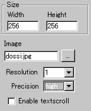
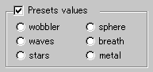
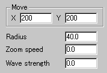
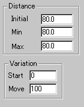
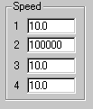

|
The name of this applet indicates nothing descriptive,
but it in fact offers a wide variety of water-like animation effects,
from Akiraesque psychic space to breathing metal surface.
This applets uses a unique optimisation and the
applet size must be a multiple of 8 pixel at both width and height,
whereas any sized images can be loaded.
[For more technical
information about the available parameters, click here.]
Most parameters are self-explanatory and you can
always see brief description of each parameter by moving the mouse
pointer over the wizard.
 |
First, select an image you want to animate and decides the
applet size at "Width" and "Height".
You can also set a resolution value at "Resolution".
"Resolution" is a zooming
parameter.
|
For instance, the value 2 gives twice as large an
applet size as the internally calculated image size, while the value
1 changes nothing.
This applets has another value to control the effect
quality. It's called "Precision". You can choose
either high or low for this value.
You can enable a textscroll effect by checking "Enable
textscroll".
 |
This applet is one of the most complex one and you need to
configure many parameters. |
For your ease, we provide some useful pre-set effects. Check this
out by selecting any one of the above, ie., wobbler, sphere, waves,
breath, stars, and metal effects.
 |
With Move X and Y,
you can define the velocity of the loaded image, which can slide
both vertically and horizontally. |
Next, "Radius" parameter defines the radius in
pixel of the circle drawn on the image. You can set the speed of
zooming effect at "Zoom speed", for which the value
takes anyone between 0.0 and 50.0. "Wave strength"
decides how strong the waving occurs. This makes the looks very
different. A higher value for this will completely distort the original
image, while a smaller value likely maintain it.
 |
Here, you configure the camera, or the position
of the observer of the effect. First, "initial"
parameter decides the initial position of the camera, while
"Min" and "Max" represent
the minimum and maximum position (length from the surface) of
it. |
"Zoom speed" mentioned before is in fact the speed
of the camera.
Next, you can set how fast the image is deformed at "Start"
and "Move". The former is the initial deformation
factor and the latter is the speed of the deformation.
 |
There are extra four speed parameters which control
rather distinctive changes, but it's hard to explain which defines
which. This is due to the complexity of the calculation involved. |
I strongly recommend you to observe and experiment the behaviour
of the applet by choosing pre-set values. They may tell you how
these speed factors affect the final animation.
Proceed to the textscroll
menu if you have checked the textscroll box; otherwise go to
the expert menu.
|